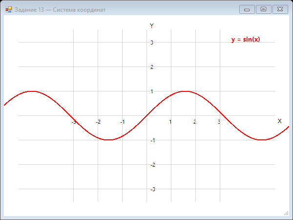

Урок 5.1: Системы координат
📌 Ключевые моменты этого урока:
- Экранные координаты: (0,0) в левом верхнем углу, Y растёт вниз
- Математические координаты: (0,0) в центре, Y растёт вверх (инвертировано!)
- Преобразование: screenX = (mathX - min) / (max - min) × width
- ScaleTransform и TranslateTransform используются для смены систем
- При отображении данных всегда масштабируйте оси в зависимости от диапазона данных
Математическая vs экранная координаты
В математике координаты начинаются снизу слева, Y увеличивается вверх. На экране координаты начинаются сверху слева, Y увеличивается вниз.
// Преобразование математических координат в экранные
private Point MathToScreen(float mathX, float mathY,
float minX, float maxX, float minY, float maxY,
int screenWidth, int screenHeight)
{
float screenX = (mathX - minX) / (maxX - minX) * screenWidth;
float screenY = screenHeight - (mathY - minY) / (maxY - minY) * screenHeight;
return new Point((int)screenX, (int)screenY);
}Преобразование координат
// Установка системы координат для Graphics
Graphics g = e.Graphics;
// Переместить начало координат в центр
g.TranslateTransform(this.Width / 2, this.Height / 2);
// Инвертировать Y (математическая система)
g.ScaleTransform(1, -1);
// Теперь (0,0) в центре, Y растет вверхМасштабирование осей
// Масштабирование для отображения данных
private void DrawGraph(Graphics g, float[] data,
float minValue, float maxValue)
{
float scaleX = this.Width / (float)data.Length;
float scaleY = this.Height / (maxValue - minValue);
for (int i = 0; i < data.Length - 1; i++)
{
float x1 = i * scaleX;
float y1 = (data[i] - minValue) * scaleY;
float x2 = (i + 1) * scaleX;
float y2 = (data[i + 1] - minValue) * scaleY;
g.DrawLine(Pens.Blue, x1, y1, x2, y2);
}
}Сетка координат
private void DrawGrid(Graphics g, float minX, float maxX,
float minY, float maxY, float stepX, float stepY)
{
// Вертикальные линии
for (float x = minX; x <= maxX; x += stepX)
{
Point screenPoint = MathToScreen(x, minY, ...);
g.DrawLine(Pens.LightGray, screenPoint.X, 0,
screenPoint.X, this.Height);
}
// Горизонтальные линии
for (float y = minY; y <= maxY; y += stepY)
{
Point screenPoint = MathToScreen(minX, y, ...);
g.DrawLine(Pens.LightGray, 0, screenPoint.Y,
this.Width, screenPoint.Y);
}
}📝 Пример задания — декартова система координат (Task13)
Рисует оси X и Y с тиками и метками, серую сетку и синусоиду в математической системе координат с центром посередине формы:
using System;
using System.Collections.Generic;
using System.Drawing;
using System.Windows.Forms;
namespace CSharpGraphicsApp
{
public class Task13_CoordinateSystem : Form
{
public Task13_CoordinateSystem()
{
Text = "Задание 13 — Система координат";
Size = new Size(600, 450);
BackColor = Color.White;
DoubleBuffered = true;
Paint += Form1_Paint;
}
private void Form1_Paint(object sender, PaintEventArgs e)
{
Graphics g = e.Graphics;
Rectangle area = ClientRectangle;
int originX = area.Width / 2;
int originY = area.Height / 2;
// Оси
g.DrawLine(Pens.Black, 30, originY, area.Width - 30, originY);
g.DrawLine(Pens.Black, originX, 30, originX, area.Height - 30);
g.DrawString("X", SystemFonts.DefaultFont, Brushes.Black, area.Width - 25, originY + 5);
g.DrawString("Y", SystemFonts.DefaultFont, Brushes.Black, originX + 5, 15);
int step = 50;
int maxVal = Math.Min((area.Width / 2 - 30) / step,
(area.Height / 2 - 30) / step);
using (Font font = new Font("Segoe UI", 8))
using (Pen gridPen = new Pen(Color.LightGray, 1))
{
for (int i = -maxVal; i <= maxVal; i++)
{
if (i == 0) continue;
int x = originX + i * step;
int y = originY - i * step;
// Тики и метки оси X
g.DrawLine(Pens.Black, x, originY - 4, x, originY + 4);
g.DrawString(i.ToString(), font, Brushes.Black, x - 6, originY + 6);
// Тики и метки оси Y
g.DrawLine(Pens.Black, originX - 4, y, originX + 4, y);
g.DrawString(i.ToString(), font, Brushes.Black, originX + 6, y - 6);
// Сетка
g.DrawLine(gridPen, x, 30, x, area.Height - 30);
g.DrawLine(gridPen, 30, y, area.Width - 30, y);
}
}
// График sin(x)
var pts = new List<PointF>();
for (float x = -(float)Math.PI * 2; x <= Math.PI * 2; x += 0.05f)
{
float y = (float)Math.Sin(x);
pts.Add(new PointF(originX + x * step, originY - y * step));
}
using (Pen pen = new Pen(Color.Red, 2))
g.DrawLines(pen, pts.ToArray());
g.DrawString("y = sin(x)",
new Font("Segoe UI", 10, FontStyle.Bold), Brushes.Red,
area.Width - 120, 40);
}
}
}Практическое задание
Задание: Система координат
- Создайте систему координат с центром в середине формы
- Нарисуйте сетку и оси X, Y с подписями
- Реализуйте преобразование математических координат в экранные
Задание по аналогии: Декартова система с функцией (Task13)
По аналогии с Task13_CoordinateSystem создайте форму с полноценной декартовой системой координат.
- Вычислите
originX = Width / 2,originY = Height / 2— центр координат. - Нарисуйте оси X и Y от края до края через центр.
- В цикле нарисуйте тики и числовые метки с шагом 50px по обеим осям (пропустите i=0).
- Нарисуйте серую сетку тем же шагом.
- Постройте любую функцию (например, cos(x)) в виде набора точек
PointF, используя формулу:sx = originX + x * step,sy = originY - y * step. Соедините их черезg.DrawLines.
Пример результата выполнения задания:

Скриншот программы (Task13)
Пример результата выполнения задания:
Скриншот программы (Task13)
💡 Совет: Делайте шаг по x достаточно маленьким (0.05 рад) — чем меньше шаг, тем плавнее кривая.
Проверка знаний
Ответьте на вопросы, чтобы проверить, насколько хорошо вы усвоили материал:
1. В математической системе координат Y увеличивается:
2. Для преобразования математических координат в экранные нужно:
3. Как преобразовать математические координаты в экранные?